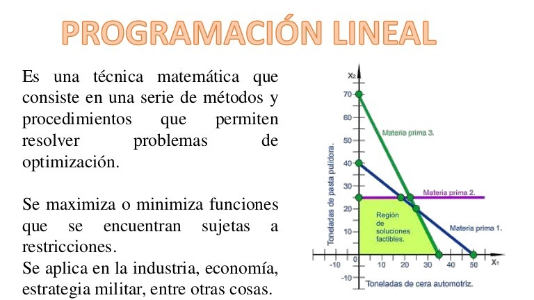

La disciplina originalmente desarrollada por George B. Dantzing llamada Programación Lineal (PL), se refiere al proceso sistemático mediante el cual se diseña un determinado curso de acción. El término lineal refleja el requisito de que todas las relaciones involucradas en el sistema deben ser representadas por funciones lineales.
En la práctica, la PL ha probado ser una de las herramientas cuantitativas que mejores resultados ha dado en la toma de decisiones. Se han reportado numerosas aplicaciones en la industria química, aeronáutica, siderúrgica, papelera, petrolera y otras más. Algunos de los problemas que se han resuelto son, por ejemplo: la programación de la producción, la presupuestación de capital, la localización de plantas, el transporte de bienes, etcétera [1].
Programación lineal: conceptos básicos.
Un problema de programación de actividades consiste en determinar el nivel y el tiempo de un conjunto de actividades interdependientes, llamado plan o programa para llevar un sistema de su estado actual hacia un objetivo específico. Un problema de asignación de recursos estriba en encontrar la distribución de un conjunto de recursos disponibles, entre actividades interdependientes que compiten por ellos, para alcanzar un objetivo. En síntesis la programación lineal pretende encontrar mediante el uso de funciones lineales, un programa óptimo de actividades interdependientes a realizar, tomando en consideración el límite de recursos disponibles para efectuarlas.

Extraído de: https://www.google.com.mx/search?q=imagenes+de+programación+lineal